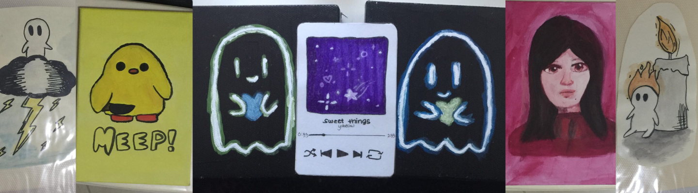

Above are drawings created with ink. Typically fine-tipped pens.
Above are drawings made with pencil. Cami would normally use a normal pencil for her drawings, but there are times where she'd play around and draw with colors.
Above are Cami's paintings. Created on either acrylics on a canvas or watercolors on paper.